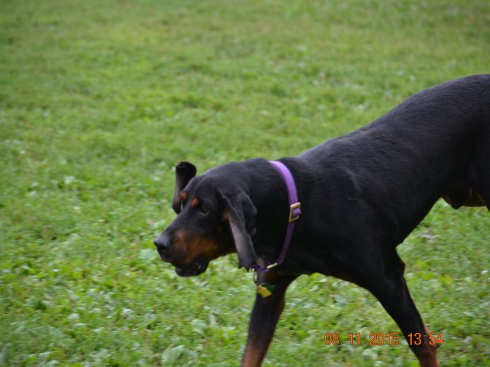

Hank
Hank was are 4th foster and by far the hardest. Hank was loveable but you could not turn your back on him or he was over the fence and out running around in the neighborhood. He escaped 3 times in the 4 months we foster him. We got him in August of 2015 and he was adopted in November of 2015.